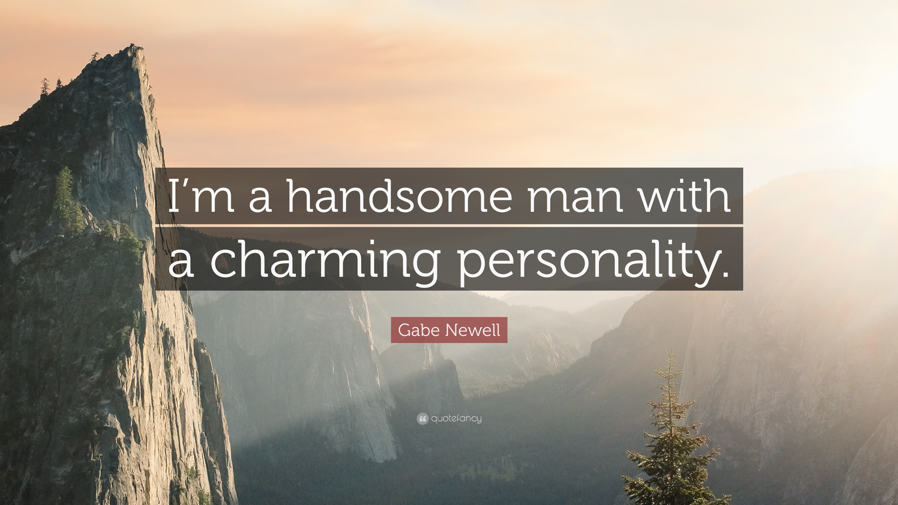

2019
I am an Enthusiastic Game and Software Developer. I have a huge passion for video games,
eSports and technology. My love for computers and programming started when I was eight years old.
I tried to host game servers at my house having only one Mbps of internet speed. Since then,
I created my first applications using Visual basic and MySQL.
Today, I have a degree in Game Development from Full Sail University.
I am addicted to the "Aha moment!" of the development process.
I am always looking forward to new challenges, opportunities for learning experiences!


Rite of champions is a top down action hack and slash multi-player game where you take the role of a “Hero” that gains powers with different weapons. Each weapon grants the hero a new class, each with three unique abilities. The hero can traverse through the world combating different enemy types, take on various quest,
or simply battle in the arena, all of these can be done online with friends.
The game is a puzzle-oriented educational game focused on the basics of programming by using drag and drop mechanics to give a list of directions to a robot with the goal of guiding it through a maze.
Key Features
Levels with unique puzzles.
Coding fundamentals represented in drag and drop blocks.
Android mobile platform support with a possible AR component (Pokemon GO styled)
3rd Party Software Used
The game will be made using Unity as the game engine, Tortoise Git for group work and source control, Android SDK for Android mobile platform support, Google Drive to host group files, Vuforia plugin for AR support.

The Game of Life, also known simply as Life, is a cellular automaton devised by the British mathematician John Horton Conway in 1970.
The game is a zero-player game, meaning that its evolution is determined by its initial state, requiring no further input. One interacts with the Game of Life by creating an initial configuration and observing how it evolves, or, for advanced players, by creating patterns with particular properties.
This project was developed in C#. The source code is avilable on my github.

In this amazing project I explored the concepts of computer graphics. I developed this project using C++ and the Direct X API.
I worked on two themes on a split screen. Space universe theme and Super Smash brothers. The camera is a FPS camera that can fly
around this little worlds.

During my second month doing my master's at Full Sail University. I learned a lot of essential knowledge about how to work with a team. There are some realities that we should face while working with people. We started a game project with a relatively small scope. The end product was successful and our team was proud of the little game loop we accomplish in a small amount of time. However, that was a little section of our class. We learned about the importance of research, and the basics needed to accomplish research. The importance of validity and the threats to validity were crucial to accomplish almost any assignment. The class required a lot of work which put us, master students, under some necessary stress. This helped me to evaluate and improve my time management skills. Since my undergraduate was all about technical skills and math, I never had the opportunity to value research in general. While spending some time at the UX lab at Full Sail University I learned the importance of researching analyzing data. Additionally, our professor made sure we understand how to cite correctly all our academic work using APA. The research topic I chose for this class was more of a warm-up for future investigations. My topic was focusing on the cognitive benefits of playing video games or The cognitive enhancements of playing video games. My topic is related to gaming, but not directly to the game industry in general. However, I found that this topic may be some related to the category of advocacy from the Game Developer Conference as well called the GDC. This class was an amazing and very challenging learning experience. Even though, at the time I started this class many things such as the novel coronavirus were happening around the world. We adapt very quickly to the new changes due to the difficult situation. However, I had a great quality of experience learning all these topics. There are a lot of things that I must learn before accomplishing mastery. But Definitely, I feel that this class showed me great lessons about how to face challenges which is very valuable for me.
2020
Mastery Journal Game Design
Nowadays video games have become a very popular and innovative way of entertainment around the world. Due to the technology grows and the fact that many video games are based on online features. This makes the process of obtaining or accessing a video game almost instantly. It is important to acknowledge that video games are having mixed perceptions through the years such as positive and negative. The focus of my research as a game designer I want to find the potential benefits and cognitive enhancements that video game playing video games may cause to the consumer. This research may be worth it for studios that focus on serious games or entertainment games. This can motivate the consumer as well as finding a positive and balanced view of video games. My study has a long way to go but in the last four months, I found some cognitive benefits that some video game genres more than others can produce in players such as problem-solving, reaction time, spatial attention, increase in prosocial behavior being exposed pro-social games and more. I am planning to move from the psychological field to the design field to find approaches in game design that can intensify this cognitive enhancement passively. My capstone goals are to focus more on the development aspect as a game developer now I am working with virtual reality development. We were working on an educational training software that falls on the category of learning and cognition. It is hard to connect my topic with my actual career goals since I want to focus more on the engineering aspect of future games. however, as a master student, this is a very valuable experience and can help me to improve on in future game design and development experiences.
2018
Hi Daniel, We are excited to offer you a Grow with Google Challenge Scholarship to the Android Developer track.
We received applications from many talented and motivated candidates, and yours truly stood out. Nick and Chaitra, on behalf of the Udacity and Google Scholarship Team.